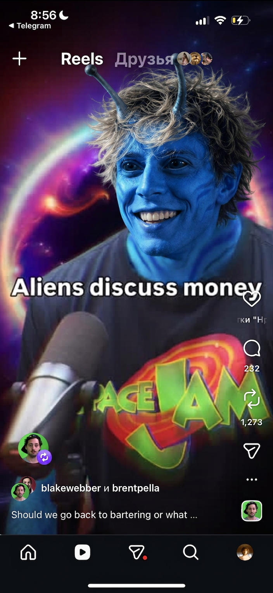
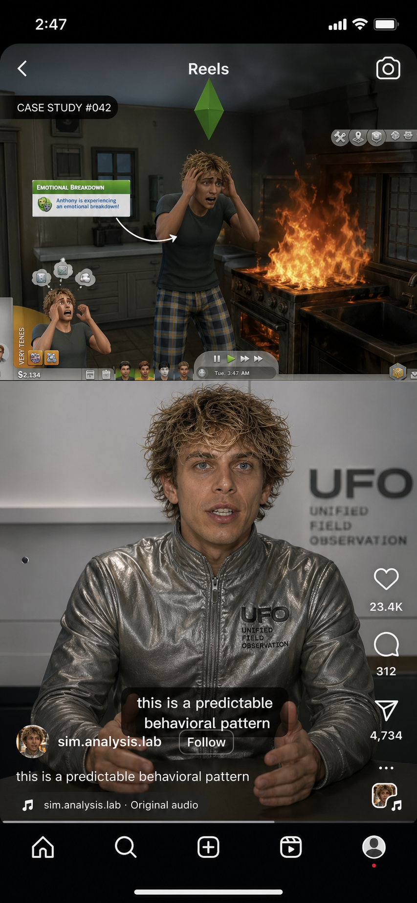

KIRILL · CONTENT BRIEF v1.0 · CLASSIFIED
What's happening and why right now is the perfect moment.
Every dominant narrative belongs to the wrong era. The gap is real — and Kirill is the only one with the right story to fill it.
Kirill lived it before anyone else started talking about it.
"Wake up and decide what you work on today. Nobody can replace you — because what you create is yours alone."
18–28 · Gen Z · Feel the rules are changing but nobody explains the new ones · Looking for a belief system, not life hacks
Robots will solve poverty, mortality, looks. Looksmaxxing and hustle culture will die from irrelevance.
Status will be defined by authenticity, uniqueness, and independence. That era is coming fast.
Selfmaxxing is the system that makes you maximally unique in an age where everything else gets averaged out.
Click each pillar — see the rubrics and example angles.
This is the core of the strategy. Click a format — see how it looks and why it works.

